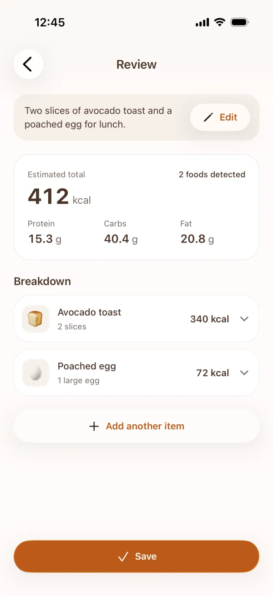
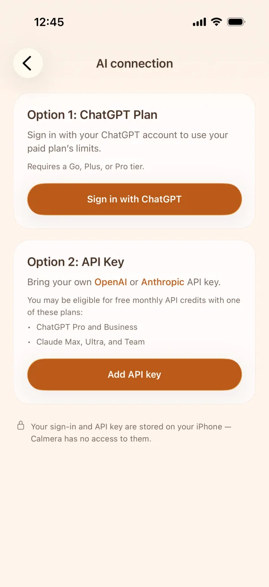

Connect your own AI
Calmera estimates nutrition with an AI service you connect, in one of two ways:
- Sign in with ChatGPTUses an eligible paid ChatGPT plan: Go, Plus or Pro.
- Your own API keyFrom OpenAI or Anthropic.
Requests go from your iPhone directly to the provider you choose. Calmera has no servers of its own.
How to use it

Today shows what you’ve eaten and how close you are to your goals.

Tap Add, then log a meal by photo, text or voice.

Check the estimate, edit anything that’s off, then save.

Connect your AI once: sign in with ChatGPT or add an API key.

Insights shows your trends by week, month or year.
Support
Email calmeradev@gmail.com. Tell us what happened and which version of Calmera you’re using.
Please don’t include your ChatGPT account details or API keys in your email.
Privacy
Your journal stays on your iPhone. To keep a copy, use Settings → Export your data. To remove it, use Settings → Erase all data.